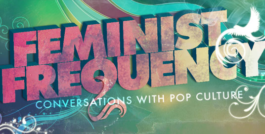
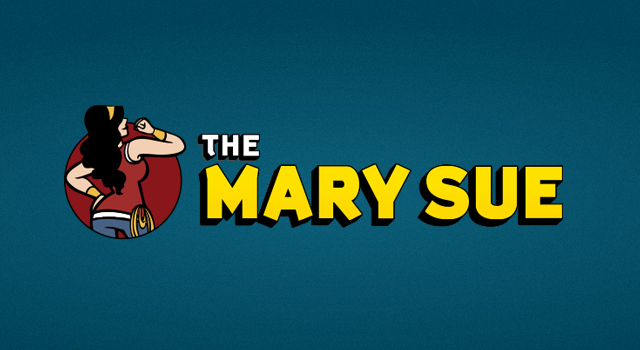

Anita Sarkeesian on The Colbert Report
On October 30, 2014, Anita Sarkeesian was invited to be a guest on The Colbert Report to discuss online harassment and the sexist representations of women in video games.
SourceOn October 30, 2014, Anita Sarkeesian was invited to be a guest on The Colbert Report to discuss online harassment and the sexist representations of women in video games.
SourceVeteran game reviewer and critic Carolyn Petit, sheds light on the poor, cliched story telling in the new game made for The Lord of the Rings franchise.
"I would love to be celebrating the game right now. But I can’t."
Source"Gamergate", after going through illegally obtained documents pertaining to the Independant Games Festival and IndieCade events, try to contact independant game developers to convince them that both events are "corrupt" and would be better off if they accepted Gamergate's support. The developer's reply was succinct and telling of what the online harrasment group is thought of in professional circles.
SourceI got this powerful letter from a former Gamergater. Please RT, it's touching and honest.
http://t.co/CjsXBrEcAv
pic.twitter.com/jjg7NPJkgM
— Brianna Wu (@Spacekatgal)An ex-Gamergater sent an apology to Brianna Wu, a game developer who was doxxed by the onine harrassers. The letter was sincere and shed's light on the ignorance within the group itself and that little by little, change is approaching.
SourceA non-profit organization started by Anita Sarkeesian in 2009, they create a web video series that explores and discusses women's roles in pop culture, focusing on video games and their impact on mainstream media. Feminist Frequency became well known when a backlash erupted over their beginning, threatening the lives of those involved in the creation of this organization. After coming out with a larger audience than before, Sarkeesian has gotten many awards and accolades for her efforts, including an appearance on The Colbert Report.
 SourceThe Border House' mission statement is to break down walls that hold video games and social media in a stereotypical light with inclusive journalism. They hold out a clear invitation to those new to feminism and those thinking to join, as well already feminists who wish to discuss video games and geek culture, while making sure it is still a safe place for marginalized groups.
SourceThings are not getting better and the fight is far from over. These are the reasons why The Angry Black Woman blog exists. The blog is a safe place to speak out about sexism and racism, and to point out the injustices currently taking place around the world. The blog is run by three people who are all angry, black and female, they use the title despite the negative stereotype to ensure that their message doesn't go unheard, as well as pointing out that sometimes anger can be a negative emotion, it can also be the fuel to change something.
SourceA news blog that primarily focuses on sci-fi news, that includes video games and TV shows in that category, it also promotes women's presence in that culture, as well as having a predominantly female staff. They present a variety of articles, from reviewing upcoming titles to discussing and critiquing sexism in the industry.
 SourceBASE is a simple resource and news gathering hub for the feminist movement in video game culture. Though there is a large and growing number of people getting involved with the movement, a priority is to inform others and stay informed. Popular blogs and videos will be archived here, as well news articles and pieces. This is simply one small step in taking part of a much larger movement at hand.